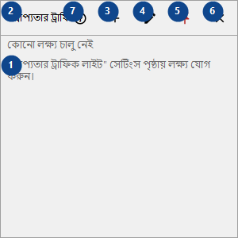
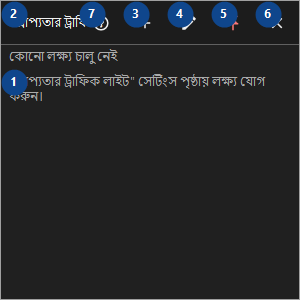

প্রাপ্যতার ট্রাফিক লাইট
এর কাজ
আপনার হোস্ট, সাইট, ফোল্ডার ও ড্রাইভের টাইলের বোর্ড; CyrFlip চালু থাকা পর্যন্ত যাচাই চলে, ফলাফল শুধু মেমরিতে থাকে।


ব্যবহারের ক্রম
নম্বর দেওয়া ব্যাখ্যাগুলি পড়ুন, প্রয়োজনীয় মান বেছে নিন এবং উইন্ডোর নির্দেশ দিয়ে এগিয়ে যান।
উপাদান
1. প্রাপ্যতার ট্রাফিক লাইট
পাশের লেবেল অনুযায়ী মান বাছুন বা লিখুন। এগোনোর আগে পরীক্ষা করুন।
আপনার শর্টকাট2. প্রাপ্যতার ট্রাফিক লাইট
পাশের লেবেল অনুযায়ী মান বাছুন বা লিখুন। এগোনোর আগে পরীক্ষা করুন।
আপনার শর্টকাট3. লক্ষ্য যোগ করুন..
উল্লিখিত কাজের জন্য এই নির্দেশ ব্যবহার করুন। মেনে নেওয়ার আগে নিশ্চিতকরণ পড়ুন।
আপনার শর্টকাট4. লক্ষ্য সম্পাদনা করুন..
উল্লিখিত কাজের জন্য এই নির্দেশ ব্যবহার করুন। মেনে নেওয়ার আগে নিশ্চিতকরণ পড়ুন।
আপনার শর্টকাট5. সবসময় উপরে
উল্লিখিত কাজের জন্য এই নির্দেশ ব্যবহার করুন। মেনে নেওয়ার আগে নিশ্চিতকরণ পড়ুন।
আপনার শর্টকাট6. লুকান
উল্লিখিত কাজের জন্য এই নির্দেশ ব্যবহার করুন। মেনে নেওয়ার আগে নিশ্চিতকরণ পড়ুন।
আপনার শর্টকাট7. সহায়তা (F1)
উল্লিখিত কাজের জন্য এই নির্দেশ ব্যবহার করুন। মেনে নেওয়ার আগে নিশ্চিতকরণ পড়ুন।
আপনার শর্টকাট